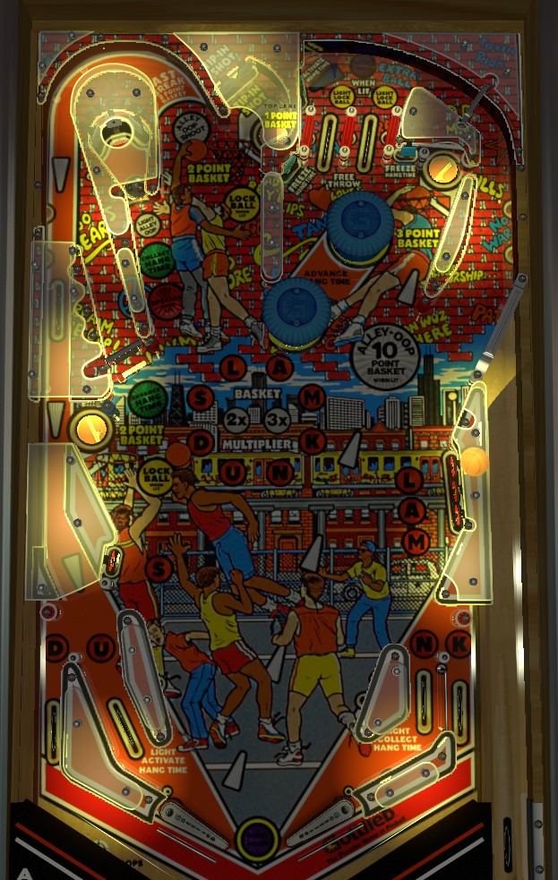

Try to always be in multiball. Rolling through a lit top lane lights a lock. For the first multiball on a particular ball, lock 1 ball in either the left or back center saucer to play 2 ball multiball. After the first multiball, you need to light and lock 2 balls, and multiball is a 3-ball affair. In multiball, lock all balls on the playfield in saucers in any order for a Super Slam, worth 1,000,000 points in 2-ball play or 3,000,000 in 3-ball play- do this repeatedly. Left in lane lights the Hang Time target just above the top lanes; during Hang Time, bumpers and spinner shots increase your end of ball bonus for 20 seconds.
One of the two top lanes is always lit at the start of the ball. Roll through the lit top lane to light a lock at either the left saucer or back middle saucer. Lane change can be used with either flipper to alternate which top lane is lit. Top lanes also always score 5,000 points and 1 basket. See the Locks and multiball section below for more information.
Just above the left top lane facing directly to the right is the Hang Time target, indicated with an arrow insert. Hit this target with a precise-power plunge that arcs into the target directly, or from a full-power plunge that bounces back and forth above the top lanes a few times. Hitting the Hang Time target starts Hang Time when lit. During Hang Time, the pop bumpers and spinner advance the end-of-ball bonus for 20 seconds. The spinner always adds 10,000 points to the bonus per spin; the first bumper adds 10,000 points to the bonus, and each successive bumper adds 1,000 more than the previous bumper did, with no limit that I'm aware of. Two standup targets near the pop bumpers pause the Hang Time timer; it appears that each pause lasts about 5 seconds, and you can't re-pause if a pause is in progress, but the lack of timer callouts or displays make this hard to verify.
A whistle sound effect indicates that Hang Time has ended. Once it has, rolling through the left in lane relights the Hang Time target above the top lanes, and you can return to the top lanes area with the right orbit shot. When Hang Time restarts, the per-bumper value progression resets to 10,000. No end-of-ball bonus is given for free, so if you never hit the Hang Time target, you can drain with no bonus.
Rolling through the right in lane briefly lights the captive ball green to collect the end-of-ball bonus; doing so does NOT reset the bonus count, so this can be worth well over a million points during a good ball.
Rolling through a lit top lane lights either the left saucer or the back center saucer for a lock. The back center saucer is positioned in an unconventional way; the only way to get the ball there is to shoot with the left flipper directly up and have the ball bounce into the top saucer off a pair of standup targets. For the first multiball on a ball, one lit top lane lights both locks, and 1 lock is needed to start 2-ball multiball. After multiball has already been played at least once, each lit top lane lights only 1 lock, and you need to lock a ball in both the left and back center saucers to start 3-ball multiball. Multiball begins as soon as all required locks are made + the final ball needed for multiball enters the playfield.
During multiball, Hang Time can still be qualified and started, and most playfield features are still available. However, the main thing that should be worked toward in multiball is Super Slams. Score a Super Slam by relocking all of the balls currently on the playfield. Relocked balls kick back out after about 10 seconds, so this needs to be done very quickly. A 2-ball Super Slam lets the player choose between 20 baskets or 1,000,000 points. A 3-ball Super Slam lets the player choose between 50 baskets or 3,000,000 points. Super Slams can be scored at any time during multiball, so you can still get a 2-ball Super Slam even if one ball drained out of 3-ball multiball. It is almost always a better decision to take the points instead of the baskets; the only reason to opt for the baskets would be if you are close to lighting an extra ball or special, which will be explained more in the Baskets section below. There is no limit on how many Super Slams can be awarded during one multiball. There is no ball save at the start of multiball, nor is there any quick multiball restart available if the multiball ends quickly.
Various playfield features award basketball points, indicated by the orange/red displays next to the standard blue alphanumeric display. I refer to them as baskets to not confuse with pinball points. Top lanes give 1 basket; the left saucer, back center saucer, and the Fast Break upper left loop shot all score 2 baskets; the right saucer scores 3 baskets; an alley-oop shot scores 10 baskets. The alley-oop has three parts. First, hit the captive ball when lit white to light the Fast Break upper loop, whose entrance is between the captive ball and top saucer; second, shoot the lit Fast Break shot; third, immediately combo the return from the Fast Break into the right saucer. The alley-oop is only lit for about 5 seconds, and unlights immediately if a switch other than a pop bumper is hit.
The Slam Dunk targets and lanes contribute to basket scoring. The S target is in the lower left; L-A-M is in the lower right; and D-U-N-K are the in/out lanes. Hit a lit target or rollover lane to unlight it. Lane change can be used with either flipper to rotate which in/out lanes are lit, but both flippers move the lit lanes in the same direction. Completing Slam Dunk once lights a 2x basket multiplier; completing it twice lights a 3x multiplier, which is the maximum. The 2x and 3x multiplier applies to any baskets collected during the remainder of the ball in play; the sole exception is that Super Slam baskets options do not get multiplied.
At the end of each ball, you receive 1 basket for each Slam Dunk letter collected over the course of the ball. Up to 2 completions of Slam Dunk can be scored, so only up to 23 baskets can be earned per ball in this way (2 completions of Slam Dunk, plus 7 of the 8 letters toward a third before they reset).
Collecting certain numbers of baskets lights extra ball and special. Default settings require 40 baskets for extra ball and 50 for special, but I have seen this set to as high as 70 for extra ball and 80 for special. A new extra ball or special is lit at each multiple of the threshold, so if extra ball is lit at 40 baskets, it will also be lit at 80, 120, etc. Extra ball is collected at the Hang Time target and special is collected at the captive ball.
At the end of the game, you are paid off 10,000 points for each basket collected throughout the game. It's definitely possible to earn more than 255 baskets in a game; I am not sure if 999 is the limit, or if the basket count rolls over, or what the true limit may be. This payoff is part of the end of ball bonus on the final ball of the game, so absolutely do not tilt on your final turn or you could be flushing millions of points down the drain.
Scores 3,000 points a spin, and adds 10,000 points per spin to the end of ball bonus if Hang Time is running.
Hoops has a conventional in/out lane setup. The left in lane is slanted to have its entrance closer to the edge of the table. The four in/out lanes correspond to the letters in Dunk as described in the Baskets section above.
The flippers on this era of Gottlieb games have very high friction rubbers and raise to a much higher angle than most other companies. It can be very easy to catch a ball on these flippers; conversely, it can be very difficult to transfer a ball from one flipper to another or trust a dead bounce for a ball coming down the table.
In competition/novelty play, extra balls and specials score 500,000 points.
On hard settings, you may be required to lock 2 balls and play 3-ball multiball on the first multiball of each ball in play.